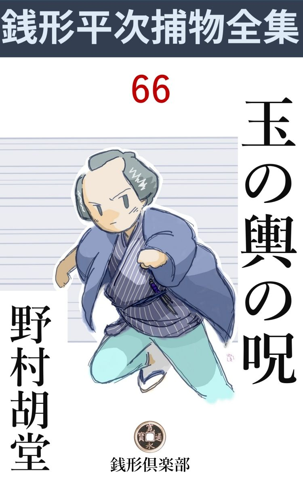
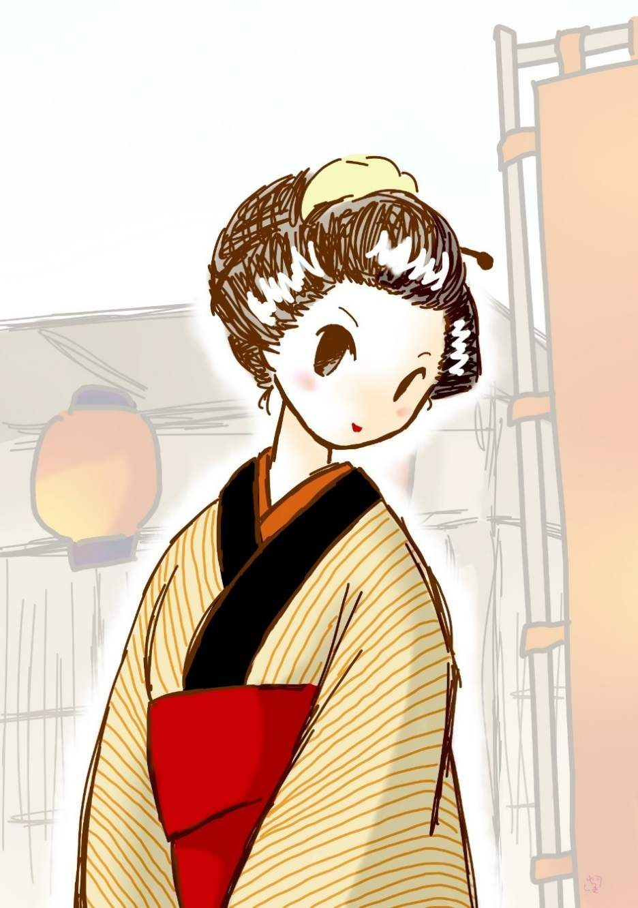

| 玉の輿の呪: 銭形平次捕物全集第66話 (銭形倶楽部) | |
| 野村胡堂 | |
| ZENIGATA CLUB (2018) | |

一
「あッ、ヒ、人殺しッ」
宵闇を劈 く若い女の声は、雑司 ガ谷 の静まり返った空気を、一瞬 、煮えこぼれるほど掻き立てました。
「それッ」
鬼 子 母 神 の境内から、百姓地まで溢れた、茶店と、田 楽 屋 と、駄菓子屋と、お土産屋は、一遍に叩き割られたように戸が開いて、声をしるべに、人 礫 が八方に飛びます。
「お吉じゃないか」
誰かが、路地の口に、ガタガタ顫えている娘の姿を見つけました。
「お菊さんが、お菊さんが------」
お吉の指さす方、ドブ板の上には、向う側の家の戸口から射す灯 を浴びて、紅 に染んだ、もう一人の娘が倒れているではありませんか。
「あッ、お菊」
人垣は物の崩 れるように、ゾロゾロと倒れているお菊の方に移りましたが、蘇 芳 を浴びた虫のように蠢 めく断 末 魔 の娘をどうしようもありません。
「お菊、どうしたんだ」
弥次馬を掻き分けて飛込んで来たのは、落合の徳松というノラクラ者、いきなり血潮の中から、お菊を抱き上げます。
が、お菊はもう虫の息でした。半面紅 に染んだ顔は、恐ろしい苦痛に引吊って、カッと見開いた眼には次第に死の影が拡 がるのです。
「お菊ッ、------だから言わない事じゃない、罰 が当ったんだ」
徳松は死に行くお菊の顔を憎悪とも、懐かしさとも、言いようのない複雑な眼で見据えましたが、やがて自分の腕の中に、がっくりこと切 れる娘の最期を見届けると、
「お菊ッ」
激情に押し流されたように、自分の濡れた頬を、娘の蒼ざめた頬にすりつけるのです。
「あッ、何ということをするんだえ、畜生ッ」
転げるように飛込んで来たのは、五十年配の女------お菊の母親のお楽でした。いきなり徳松を突き飛ばすと、その膝の上から、娘のお菊を毮 り取ります。
「おっ母 ア、お菊は大変だぜ」
わずかに反抗する徳松。
「お前がやったんだろう。畜生ッ、どうするか見やがれ」
戦闘的な母親は、お菊が死んだとは気がつかなかったものか、相手の男を憎む心で一パイです。
「違うよ、俺じゃねえ」
「あッ、お菊、確かりしておくれ、おっ母アだよ、お菊ッ」
「------」
「お菊、お菊ッ、死んじゃいけないよ。お菊、明日という日を、あんなに楽しみにしていたじゃないか」
「------」
「お菊」
母親のお楽は、自分の腕の中に、一と塊 の襤褸 切 れのように崩折れるお菊を揺ぶりながら、全身に血潮を浴びて、半狂乱に叫び立てるのでした。
「おっ母ア、驚くのは無理もねえが、------お菊坊がこんなになったのは、おっ母アのせいもあるんだぜ」
徳松はまだそこに居たのです。灯先 にヌッと出した顔は------身体は------、顎 から襟へ腕へ------膝へかけて、飛び散る碧 血 を浴びて、白地の浴衣を着ているだけに、その凄まじさというものはありません。
「まだウロウロしているのかい、------お菊を殺したのはお前だろう」
猛然 と振り仰ぐお楽。
「違うよ、俺じゃねえ、大名なんかへやる気になったから、魔がさしたんだよ」
「何を、------お菊はな、お前のような肥 桶 臭 い小 博奕打 の相手になる娘 じゃない。弾ね飛ばされたのが口惜しくて、こんな虐 たらしい事をしやがったろう」
「違うよ、おっ母ア」
「覚えていやがれ、そのガン首をお処刑 台 の上に晒 してやるから」
そう言ううちにもお楽は、お菊の死骸をかき上げかき上げ、赤ん坊でもあやすように、血潮に濡れた肩から、頸筋へ、額にかかる黒髪のあたりへと、際限もない愛 撫 を続けるのでした。
二
話は十日ほど前に遡 ります。
雑司ヶ谷の鬼子母神門外、大榎 の並木の蔭に竝 んだ茶店は、そのころ江戸の町内にもない繁昌をみせたものでした。
一つは大奥始め、諸家の女中、町人の女房たちの信仰を集めた鬼子母神の御利益と、もう一つは、鷹 野 、野 駆 け、遠乗りに頃合なので、代々の将軍始め、大名、旗本、諸家の留守居、若侍たちに、一番人気のあった遊び場所でもあったのです。
上総国 勝浦一万一千石の領主、植村土佐守は、若くて寛達で、猟と女と遠乗りが何より好きという殿様でした。家来のうちでも、世 故 に長 けた柴田文内と、若くて腕のできる吉住求 馬 は、お気に入りの筆頭で、その日も土佐守の遠乗りのお供をして、呉服橋の上屋敷から、一気に目白へのし、帰りは鬼子母神のお楽の茶店へ寄って、持参の割 籠 を開いてきたのです。
大名は滅多に他所 で煮炊 きした物を食べません。茶店から貰ったのは、熱い湯と、生みたての鶏卵 だけ。
「お楽、------今日は御微行 だから、何も御修業だと仰しゃる。地酒を一献 差上げてはどうじゃ」
柴田文内は、顔見知りのお楽へ、こんな事をねだりました。
「へエ------」
お楽は恐る恐る樽 の呑口を捻 って、地酒といっても自慢のを一本、銅 壺 へ投り込んで、さっそくの燗 をすると、盆へ猪 口 を添えて、白 痴 がお神楽 の真似をする恰好で持って出ます。
「気がきかないお楽だな。お前のところには、お浅 とかいう娘があった筈ではないか。酌 も大事なおもてなしだ、平常着 のままで構わぬ、出せ出せ」
柴田文内は、主君土佐守のニコニコする顔を見ながら、身分柄にも似ぬぞんざいな口をききます。
尤 も、植村土佐守はこんな事が好きで好きでたまらなかったのです。
「浅はこの春亡 くなりましたよ、旦那様」
お楽は恐る恐る坐り込みました。
「ホウ、それは愁傷 であったな。------が、此店 へ入ったとき、綺麗な娘が居たように思うが------あれは誰だ」
「浅の妹の菊でございます」
「その菊で宜い、ここへ呼んでくれ。酌を申付ける。姉の浅よりも一段のきりょうじゃな」
「へエ------」
土佐守はもう盃を持っております。お菊は着換えをする暇 もなく、ほんの心持化粧崩れを直して土佐守の前へ押出されたのです。
「------」
黙ってお辞儀をして、これだけが看板の大きな島田髷を傾 げるように白い顔をそっとあげました。妙に人馴れた眼、少し綻 びた唇、クネクネと肩で梶 を取って、ニッと微笑したお菊は、椎 茸 髱 と、古 文 真 宝 な顔を見馴れた土佐守の眼には、おどろくべき魅力でした。

赤前垂は外 しましたが、貧しい木綿物の単衣も、素足の可愛らしい踝 も、人を恐れぬ野性的な眼 差 も、お大名の土佐守には、まったく美の新領土です。
奥方は今を時めく老中、酒井左衛門尉 の息女で、一も二もなく権 門 の威勢に押されている土佐守が、こんな野 蛮 で下品で、そのくせ滅法可愛らしい娘を、見たことも想像したこともありません。
「もっと近う参れ、盃を取らせるぞ」
そんな事を言った時は、二本目の銚子 が用意されて居りました。
翌る日、柴田文内と吉住求馬は、支度金三百両を持って、お楽の茶店に乗込んで来たのに何の不思議があるでしょう。上屋敷に光っている奥方に憚 って、名義は本所閻魔堂前の下屋敷召使、十日目には駕籠で迎えに来るということまで取決めに来たのです。
お楽と、お楽の後添 、------死んだお浅とお菊には継 父 に当る弥助------の喜びはいうまでもありません。お菊は大名の妾 と聞いて、最初は二の足を踏みましたが、上屋敷の奥方附と違って、下屋敷に召使格で居る分には、物見遊山も芝居見物も勝手と言い聞かされて、たちまち乗気になりました。
その上、土佐守はなかなかの美男で、表向お楽夫婦と親子の縁は切るが、内々は逢っても貢 いでも、いっこう構わぬという条件で、話はトントン拍子に運んでしまったのです。
柴田、吉住両士は帰りました。が、後で考えると、そう簡単には玉の輿に乗れそうもありません。お菊には去年の秋から、落合の徳松という、悪い虫が付いて居たのです。
徳松は落合村の百姓の子で、素姓の悪くない男ですが、友達にやくざが多かったので、いつの間にやら、その道に深入りし、親許は久離切られて、一かど兄 哥 で暮して居りました。お菊が背を見せたとなれば、匕 首 くらいは振り廻す筈ですが、相手が大名と聞くと、威張り甲斐も暴れ甲斐もありません。仲に入る人があって、手切れが三十両、女から男へやって、これは無事に話がつきました。
それから九日、化粧と支度に大騒動をして、明日はいよいよ大名屋敷に乗込もうという前の晩------。
継父弥助の連れ娘 、歳はお菊より二つ上の二 十 歳 ですが、跛足 で不きりょうで、余り店へも出さないようにしている、お吉と一緒に銭湯へ行って、途中まで帰って来たところを、------お吉が湯屋へ手拭を忘れて、それを取りに戻った間に、無 慙 、喉笛を掻き切られて死んでいたのです。
三
土地の御用聞、三 つ股 の源吉が、子分の安といっしょに飛んで来たのは、それから煙草三服ほどの後でした。
「何？ お菊が殺された？------退 け退 け、邪魔だ」
源吉の塩辛 声を聞くと、お菊の死骸に蠅 のように群がった弥次馬は、一ぺんにパッと飛散ります。
「徳松、------手前 は、逃げちゃならねえ」
うろうろする徳松は、源吉にグイと袖を押えられました。
「親分、あっしは知りませんよ」
「何を、誰が手前が下手人だと言った」
「へエ------」
「変な野郎じゃないか、あッ血ッ」
徳松の顎 から下は、手も胸も、着物も斑々 たる血潮に染んでいることに、源吉は気がついたのです。
「お菊の死骸を抱き上げた時、こんなに附きましたよ」
「何？------お菊の死骸を抱き上げた時附いた血だ？ 嘘を吐 きやがれ、殺す時ついた返り血を誤 魔 化 せねえから、多勢の前でお菊の死骸を抱き上げて、血染の上 塗 をしたんだろう。そんな手を喰うものか」
「親分」
「誰か、この野郎がお菊の死骸を抱き上げる前に、着物にも血のついていないのを見届けた証人でもあるかい」
源吉はそう言いながら四方を見廻します。『血の附いて居るのを見たか』と言わずに、『血の附いていなかったのを見届けた証人はないか』と言ったところに、弥次馬心理を掴んだ源吉の働きがあったのです。こういえば、白洲 の砂利 を掴んでまでも、徳松の無実を言い立てようという、勇気のある篤 志 家 は容易に出ないでしょう。
「親分、そいつは無理だ。あっしは何にも知らねえ」
「えッ、手前が知らなくたって、俺が知って居りゃ沢山だ。------お菊を追い廻したのは、手前の外にはねえ。落合の兄哥に遠慮して、土地の若い男は、門並御遠慮申上げて居るんだ。お菊に惚れただけの男なら、一束や二束はあるが、お菊を手に入れたのは手前だけよ。そのお菊が大名屋敷に奉公すると聞いて、指を啣 えて引込む手前じゃあるめえ」
「親分」
「うるせえ野郎だ。安、縛ってしまえ。顎を叩きたきゃ、お白洲で存分にやるがいい」
「大丈夫ですか、親分」
子分の安が躊躇 するのを、三つ股の源吉は叱り飛ばすように縄を掛けてしまいました。
「親分さん、娘を殺したのは、その男に間違いありません。どうぞ、敵を討って下さい、お願い申します」
お楽は娘の死骸を抱いたまま、繁く降る涙の顔を挙げました。
「お母さん、お菊さんを家へ運んで行きましょうよ」
弥次馬と源吉の目に射 竦 められて居たお吉は、この時ようやく声を掛けました。
「おや？ まだそこに居たのかい、お前は」
「え」
「お菊がこんな姿になって、------お前は、まさか嬉しいんじゃあるまいね」
「まア、おっ母さん」
お吉はあわてました。継 母 の舌の動きが、あまりにも辛 辣 だったのです。
「手伝っておくれ、------噛みついちゃ悪いから、お前は足の方を持つがいい」
「------」
黙って死骸の足を持上げるお吉。わけもない涙が、この時ドッとこみ上げます。
「でも、やはり泣いてくれるんだね」
自分の言った皮肉のためとは、顚 倒 したお楽には気がつかなかったのでしょう。
多勢の弥次馬は、この時ようやく気がついたように、母娘 二人に手を貸して、死骸をあまり遠くないお楽の茶店に担 ぎ込みました。
後に残ったのは、三つ股の源吉と、子分の安の二人だけ。尤も安の手には、落合の徳松の縄尻が掴まれて居ります。
「おや、剃刀 じゃないか」
血潮の中から、源吉は平べったいものを拾い上げました。
「よく使い込んだ剃刀ですね、親分」
子分の安は片手の提灯をかかげました。
「いいものが手に入った。安、引揚げようか」
「へエ------」
源吉はその剃刀を、徳松の物と決め込んでいる様子です。
四
翌る朝、植村土佐守家来、柴田文内と吉住求 馬 、女乗物を用意して、お楽の茶店の裏口へ、着けました。
「おかしいぞ。簾 が下って、忌中 の札が出て、中から線香の匂いだ。誰が死んだのだろう？」
柴田文内、鼻をヒクヒクさして居ります。
「左様------、主人かな」
吉住求馬にも合点が行きません。
折角玉の輿に乗りかけたお菊が、昨夜のうちに、非業の最期を遂げたことは、固 より知る由もなかったのでしょう。
お楽弥助夫婦も、あまりの事に顚倒して、今日植村家の迎えが来るとは知っていながら、ツイ使いの者を走らせて、それを止めることまでは考え及ばなかったのです。
「あ、柴田の旦那様、娘は、娘はとうとう殺されてしまいました」
お楽は真っ先に飛んで出ました。
「使を差上げる筈でしたが、この通りの取込みで、何とも相済みません」
亭主の弥助は、額を叩いて追従 らしく深々とお辞儀をして居ります。
「それは気の毒、誰がいったいお菊を殺したのだ」
柴田文内、仰天しながらも好奇の眼を光らせます。
「娘をつけ廻していた、徳松という野郎でございます。------昨夜のうちに縛られて行きましたが------」
「フーム、そう申上げたら、殿にはさぞ御落胆 遊ばすことであろうが、余儀ないことだ。------あんまり力を落すではないぞ、お楽」
「ハイ」
お楽は見事な女乗物を眺めながら、顔も挙げられないほど泣いて居りました。これに乗る筈だった娘が、昨夜の血潮も洗い浄 めず、逆さ屏風 の裡に冷たく横たわっているのです。
「では、帰るとしようか、吉住氏」
「ここへ来合せたのも、何かの因縁だろう。せめて線香でも上げて行こうか、柴田氏」
吉住求馬は、若いに似気なく気が廻ります。
「なるほど尤も、年上の拙者が、それに気がつかないとは迂闊 千万」
柴田文内はそんな事を言いながら中へ入りました。つづく吉住求馬。
二人並んで、心静かに拝んでいると、何やら急に家の中が騒ぎ出します。
やがて騒ぎが鎮まると、バタバタと入って来たお楽、お菊の遺骸の前へヘタヘタと坐ると、何やら、訳のわからぬ事をブツブツ言いながら滅茶滅茶に線香を立てております。
「何だ、お楽」
「土地の御用聞------三つ股の源吉という親分ですよ」
「何しに来た」
「お吉を縛って行くんだそうで------」
「お吉？」
「亭主の連れ娘 で私には継 しい仲ですよ。片輪者のくせに妬 み根性が強いから、お菊くらいは殺し兼ねません」
お楽はこういううちにも、お吉に対する憎悪の燃え上がってくるのを、どうすることも出来ない様子です。
「そんな事はあるまい。下手人は徳松とやらいう男で、昨夜 のうちに捕まったというではないか」
口数の少い吉住求馬はこう追及します。
「二人でやったかも知れませんよ」
「何？」
「どうかしたら、お吉一人の仕業かも知れないじゃありませんか。------お菊の姉のお浅がこの春死んだのも、お吉の拵 えた玉子焼に中 てられたからで------何だって私はあの時気が付かなかったでしょう。玉の輿に乗る前の晩、あの化物娘と一緒に外へ出すなんて------」
お楽はキリキリと歯を鳴らします。継娘 にお菊を殺されたと思い込むと、矢も楯 もたまらぬ憎悪に、煮えくり返るような心持だったのでしょう。
柴田文内と吉住求馬は、そこそこに外へ出ました。半狂乱の母親を相手に、呪 いと恨 みの数々を聞かされるのは、とても我慢が出来ません。
外へ出ると、三つ股の源吉と子分の安は、弥助の連れ娘 お吉を縛り上げて、弥助の驚きと嘆きを他 所 に、ここを引揚げるところです。
「源吉とか申したな」
「へエ------、柴田様と吉住様で、飛んだことでございましたな」
源吉の片頬には、ニヤリと皮肉な笑いが動きましたが、あわてて、揉みほぐすように、その頬へ手を当てました。
「その娘に疑いが懸 ったのか」
と、吉住求馬、若い義憤らしいものが燃えたのでしょう、少しせき込んだ調子です。
「へエ------、昨夜いっしょに風呂へ行ったのはこの娘で、------手拭を忘れて湯屋へ戻ったといいますが、番台で訊くと、戻らなかったといいますよ」
「戻りましたよ、湯屋の前まで行って、暖簾 を潜 ろうとすると、私の手拭は入口のドブ板の上に落ちていたんです」
お吉は躍起 と抗弁しました。お菊より二つ年上ですが、跛足 のせいか小柄で、お浅お菊姉妹には比べられないにしても、お楽が化物娘というほど醜 くはありません。
自分のきりょうに自信のないお吉の、素顔のままの質素な様子が、人によっては却ってお菊の派手好みなのより良いという人があるでしょう。現に吉住求馬も、キリキリと縛り上げられて、訴えようのない眼------泣き濡れた頬、いじらしくも歪 む唇などを見ると、助けられるものなら助けてやりたいといった、やるせない心持になるのを、どうする事も出来なかったのです。
「ドブ板に落ちていた手拭は、こんなに綺麗じゃないか」
源吉は生 湿 りの手拭をお吉の眼の前にヒラヒラさせました。
「家へ帰ってから洗ったんです」
こういうお吉の言葉は、勝 誇 る源吉を動かしそうもありません。
「徳松はどうした」
と柴田文内。
「まだ番所に留めてありますよ。------あの騒ぎのときは、筋向うの碇床 に居たんだ、と言い張りますが、誰も覚えちゃ居りません。------それに、お菊を殺した剃 刀 は、碇床の格子先からなくなった品だそうで------」
「すると、殺されたのは一人で、殺したのは二人か」
吉住求馬の調子は皮肉ですが、
「徳松か、お吉か、どっちかですよ、旦那」
源吉は吉住求馬の抗議も一向通じないような顔をして居ります。
五
それから一刻 あまり、葬式 の手順もつかずに居る中から抜出して、亭主の弥助は番所にいる見廻り同心に訴え出ました。
「お菊を、殺したのは、この弥助に相違ございません。------いつもお菊やお浅に苛 められて、小さくなっている、片輪のお吉が可哀そうで、ツイあんな大それた事をしてしまいました」
というのです。
「馬鹿な事をいえッ。お前は、娘のお吉を助けたさに、罪を背負って死ぬ気だろう」
と、いきり立つ源吉。
「親分、よく近所の衆から、聞いて下さい。お吉がどんな心掛のいい娘で、今まで二人の妹の無理を聞いていたか、よく解りましょう」
「------」
「そのお菊が、大名に見染められて下屋敷に上がることになってからというものは、人を人臭いとも思わぬのさばり様で、さすがの私も見るに見兼ねました。あの晩私も銭湯へ行った帰り、フト見ると路地の中にお菊がたった一人立って居るじゃございませんか。お吉に疑いがかかるとは夢知らず、碇床 の格子先から剃 刀 を取って、一と思いにお菊の阿 魔 を殺しました」
「それは本当か、弥助」
次第に通る訴 の筋を、三つ股の源吉も、見廻り同心も、無視するわけには行きません。その場で縄を打たれて、お菊殺しの下手人は、これで三人になったのです。
父親の弥助が自訴 して出たと聞くと、お吉は今まで否定し続けた態度を一変して、
「お菊さんはこの私が殺しました。------父さんは何にも知りやしません。銭湯へ行ったのは本当ですが、私達より一と足先に家へ帰った筈です。私を助けるために、そんな事を言い出したのでしょう」
急にこんな事を言い張ります。
こうなるとどれが本当の下手人か判らず、そうかといって、三人の縄 附 を奉行所へ送るのは、三つ股の源吉始め、行きがかりで立会った見廻り同心の顔にもかかわるわけで、しばらくは目白の番所に留め置いたまま、一と晩念入りに調べ抜くことになったのでした。
その晩------。
事件はとうとう、神田の平次へ持込まれました。
「平次殿に逢いたい。拙者は植村土佐守家来、吉住求馬と申す者だが------」
変な事からこの渦中に巻込まれた吉住求馬は、思案に余った顔を、銭形平次のところへ持って行ったのでした。
「へエ、私は平次で、------どんな御用でございましょう」
慇懃 に迎え入れた平次に、吉住求馬は、事件の顚 末 を細々 と物語りました。
「こんなわけだ。騒ぎが大きくなれば、自然主君の御名前にも拘 わる。それに、奥方御里方、酒井左衛門尉様への聞えも如何、------早急に片附ける工夫はないものか」
「------」
「もう一つ。三人のうち二人、或は三人とも無実であろう。父親が娘を庇 い、娘が父親を庇う心根がいかにも不 憫 、助けられるものなら助けてやりたい、曲 げて力を貸してはくれまいか」
純情家らしい青年武士が、畳へ手を付かぬばかりにいうのを、銭形平次はじっと聴いておりました。
「縄張り違いは、私共の仲間でうるさい 事になっておりますが、御言葉の様子では、よほど深い仔細 がおありのように存じます。八丁堀の旦那方の御言葉を頂いて、明日にもきっと雑 司 ガ谷 へまいりましょう」
「乗出してくれるか、平次」
「へエ」
「礼を言うぞ」
吉住求馬は、主君大事と思い込んでいるのでしょう、平次が引受けると、思わずホッと胸を撫で下ろしました。
六
翌る日の朝、与力笹野新三郎の言葉を頂いて、平次は雑司ガ谷に乗込みました。
「銭形の兄哥、この通りだ。種も仕掛けもねえ、が、三人が三人とも、下手人の疑いがあるから、どれを奉行所へ送りようもねえ」
三つ股 の源吉は、イヤな顔をしながらも十手の義理で、八丁堀のお声掛りで来た平次に、一切のことを話しました。
「有難う、それで大概判ったようだ。なるほど三つ股の兄哥が三人縛ったのも無理はない。俺だって、そのうち一人だけ縄を解く気にはなるまいよ」
「そう言えば、その通りだが------」
源吉はいくらか心持が解けた様子で、苦い笑いを漏 します。
「一と通り見せて貰おうか、何も後学のためだ」
「それじゃ、現場から------」
「八、手前 もいっしょに来るがいい」
平次とガラッ八の八五郎は、三つ股の源吉に案内されて、お菊の殺された湯屋の路地へ入りました。
一方は五尺ばかりの生垣 、一方は黒板塀を前にした下水で、ドブ板の上は、血汐を洗って、一 昨 夜 の跡もありませんが、源吉に死骸の位置を、細 々 と説明させた上、平次はそこから湯屋の入口まで歩いて見ます。距離はほんの二三十間ですが、一箇所生垣が出張っているので、見通しはつきません。
「お菊が声を立てさえすれば、湯屋の入口にいたお吉に聞えた筈だね」
と平次。
「だから、殺したのは、お菊をよく知っている者の仕業 だ。流しの剽 盗 や、あまり口をきいた事もないような人間のしたことじゃねえ」
「その通りだ。------が、別れ話がついて、他人になった筈の徳松が、未練らしくここで絡 み附いたとしたら------手に刃物なんか持って居るのを、お菊はおとなしく応対するだろうか」
平次の観察は、もう源吉の思い及ばなかったところまで飛 躍 します。
「すると、徳松は------」
ガラッ八は長い顔を出した。
「お前は黙って居ろ」
「へエ------」
湯屋の前、お吉が手拭を落したというあたりには、固より証拠などの残っている筈もありません。
「碇床 へ行ってみようか」
三人は元の道を取って返して、兇行のあった場所から、十間とも離れていない、碇床の店先に立ちました。
「剃刀 はここに置いてあったのか」
平次は、油障子に大きな碇を 描いた入口の隣------砥石 や鬢附 油 や剃刀や鋏 を並べた格子を指しました。
「これは、親分さん方、御苦労様で------」
碇床の親方は、少し頓狂な声を出します。
「格子の障子は開けて置くのかい、親方」
と平次。
「へエ、この暑さですから、閉め切っちゃ仕事が出来ません、------お蔭で飛んだ迷惑をしましたよ」
「剃刀を持って行くのが見えないだろうか」
「見張って居なきゃ、ちょいと気がつきませんよ、親分」
親方の言うのは恐らく本当でしょう。
「あの晩、徳松がここにいたそうだが」
「将棋 の相手がありますから、三日のうち一日はここで暮します。あの騒ぎの時も、ここにいたように思いますが、お菊さんとお吉さんが銭湯へ行く姿を見ると、急にソワソワして何処かへ出かけたようで------」
親方の言うのが本当だとすると、徳松は少し不利益になります。
「それを、俺も徳松に訊いたんだ。すると、あの野郎は、お吉といっしょだから、この辺で顔を見せて、声でも立てられるとうるさいと思い、お菊の家の前で待って居た------と、こう言うのだよ」
源吉は引取って説明します。
「撚 を戻すつもりだったのかな」
と平次。
「いや、もういちど逢って、名残が惜 しみたかったというよ。どうせ心変りのしたお菊だし、明日玉の輿に乗ると決って居るから、何を言っても無駄だと諦 めて居た------ともいうが」
「それが本音かも知れないな、こんどはお菊の家へ行ってみようか」
平次は、こう、静かに段落をつけました。
七
お菊が殺され、お吉が縛られ、弥助は自訴 して出た、残るはお楽一人だけ。近所の衆や、親類の者が来て、今日の葬式の支度だけは急いでおりますが、悲劇の家は、何となく落 莫 として、身に沁みるような淋しさがあります。
「銭形の親分さん、------早く娘の敵を討って下さい。いくらお吉が可愛いからって、お菊の葬式も済まないのに、うちの人まで自訴なんかして」
勝気らしいお楽も、すっかり気が挫 けたものか、評判の銭形平次が乗出したと聞くと、その袖 に縋 り附いて、サメザメと泣くのです。
「心配することはないよ、下手人は今日明日中に判るだろうから」
「本当でしょうか、親分さん」
「判ったところで、何うもならないかも知れないが、ともかく、落着いて居るがいい------そういったところで、娘二人に死なれちゃ、落着いても居られまいが」
平次の眼には、深い哀憐 が動きました。
「有難うございます、親分さん」
これが岡っ引手先の口から聞く言葉でしょうか。お楽はツイ耻 も忘れて、声を立てて泣きます。
「大急ぎで来て間に合ったのが何よりだ。お菊の死顔を見せて貰おうか」
「ハイ」
お楽はようやく涙をおさめて、三人を奥へ案内しました。幸い入棺 したばかり、白布を取って蓋 を払うと、早桶の中に、洗い浄 められたお菊の死骸が、深々とうずくまって居ります。
静かに顔を起してやると、左 顎 の下へパクリと開いたのは、凄まじい斬傷、蠟 のような顔に、昨日の艶色はありませんが、黒髪もそのまま、経 帷子 も不気味でなく、さすがに美女の死顔の美しさは人を打ちます。
「フーム」
「銭形の兄哥、何うだい」
と源吉。
「刃物が違う」
「えッ」
「剃刀 には峰 があるから、こう深くは切れない」
「いや、肉がはぜているぜ」
源吉は敢然 としました。
「刃が厚いからだ」
平次も下 りません。
続いて、その晩着ていた、お吉と弥助の着物を出させましたが、どっちにも血の飛 沫 いた跡もなく、洗った跡もないのです。
「綺麗だな」
独言のように平次。
「血が附かないわけだ。剃刀 を逆手 に握って、後ろから引っ掻くように切ったんだ」
源吉は手真似をして見せました。お菊の後ろから近づいて、何か声をかけながら、咄 嗟 に剃刀を喉 へ廻し、肩を押えてやった------と見たのでしょう。
「逆手に持って肩を押えながら切った剃刀なら、傷は上向に引かれる筈だ、------これは刃物の入ったところから下向に引かれているぜ」
平次の推理は仮借 もありません。
「が------」
「前から切ったのだぜ。三つ股の兄哥、剃刀じゃない。脇 差 で前から切るとこうなる」
平次は手真似をして見せました。
「前から脇差で切られるのを、声も立てずに待って居たのかい」
と源吉。
「知ってる人だ、------お菊のよく知って居る人だった。眼の前へ来るまで自分が斬られるとは思わなかった------」
「それにしても脇差を抜くのを黙って見て居たというのかい」
源吉はなかなか承知しません。
「------」
平次は何か言いかけましたが、聞いて居る者が多いのに気がついたか、そのまま口を噤 んでしまいます。
「親分さん、下手人はやはり、あの徳松の野郎でしょうか」
お楽は顔を挙げました。
「いや解らぬ、三人に逢って訊いてみなきゃ」
平次と八五郎と源吉は、目白の番所へ引揚げました。
八
そこへ行くと、三人の縄附に逢う前に、平次は、剃刀 と手拭を見せて貰います。
剃刀はありふれた床屋使いの品、柄 のところに籐 を巻いて、磨 ぎ減らしてありますが、なかなかよく切れそうです。
「これが、お吉の手拭か」
次に取上げた手拭は、何の変哲 もない中古 の品で、よく乾いてしまって、泥も砂もついてはおりません。
「湯屋の前で落したというが、砂も泥もついては居ない------尤 も、お吉は帰って来てすぐ洗ったといってるが」
と源吉。
「成程な」
平次はそれっ切り手拭を返して、番所の中へ入りました。中には、徳松と、お吉と、弥助が、縄も解かず、役所にも送られず、三人の手先が付添って、黙りこくって控えております。
「徳松」
「------」
平次は凝 っと若い男の顔に見入りました。精々二十五六でしょう。身を持崩してはおりますが、百姓の子らしい堅実さのどこかに残る様子も、決して人を不愉快にさせるような男ではありません。
「皆んな言ってしまった方がいいぜ」
「------」
「お前が隠して居る事があるから、事面倒なんだ」
「------」
「お前はお菊を殺す気で、碇床 から剃刀を持出したに相違あるまい」
「いえ、親分」
徳松は振り仰ぎました。
「黙って聞け、------路地の外で待っていたが、二人の娘はなかなか来ない。そのうちに変な物音がしたので、飛込んで見ると、お菊はドブ板の上に殺されていた」
「親分」
「お前は剃刀を投出して、路地の外へ飛出し、お吉の声を聞くと、もういちど弥次馬といっしょに引返して、さっき身体についた血の誤 魔 化 しように困ってお菊を抱き上げた筈だ」
「親分、------その通りです。恐れ入りました、どこで親分はそれを見ていました」
徳松はヘタヘタと崩折れました。
「何だって早くそれを言わなかったんだ」
「でも、剃刀を持出したり、着物に血がついたり、------逃れようがないと思いました」
「銭形の」
不意に、源吉は平次の肘 を押えます。
「何だい、三つ股の兄哥」
「それじゃ、徳松の野郎に、言い逃れの口上を教え込むようなものじゃないか」
源吉はこみ上げる激動を押えている様子です。
「大丈夫だ、それに相違なかったんだ。お菊を殺したのは徳松なんかじゃない、据 物 斬 の名人だよ」
「えッ」
「前から抜く手も見せず喉 笛 を切って、噴 き出す血を浴びる前に逃出したんだ」
「------」
「後ろから徳松が来た筈ですぜ、親分」
ガラッ八が口を出します。
「その通りだ。前からはお吉が引っ返して来た、------が曲者は恐ろしい腕利きの上身軽だ。お菊を仕留めると、左手の生 垣 を一気に飛越えて、百姓地へ逃込み、騒ぎの初まったころは、目白坂を下って居たよ」
「------」
「生垣の中に足跡があった筈だ------今日はもう見えないが、その時すぐそれを見つけさえすれば、こんなに多勢縛るまでもなかった」
平次の言葉には何の疑いもありません。
「お吉は？ 親分」
とガラッ八。
「何にも知らなかったのさ。お吉が下手人なら、濡 手拭 へわざと泥を付けたままにして置くよ。お吉は本当に風呂屋の入口で自分の手拭を拾ったから、女らしい心持で、その晩騒ぎの最中にも手拭の泥を洗って置いたんだろう。手拭を洗ったのが、お吉に罪のない証拠さ」
何という明察、------源吉も一句もありません。
「弥助は？」
ガラッ八はまだ堪能 しない様子です。
「娘を助けたい一心だ------さア、縄を解いてもらって帰るがいい。お楽の手前、極りが悪かったら、俺がいっしょに行って、よく話してやるよ。お楽だって、気の強いことをいっても、二人の娘に死なれちゃ、老先が心細かろう。------精々孝行をしてやるがいい、なア、お吉」
平次は静かに言い終ります。
お吉は縄を解かれるのを待ち兼ねたように、父親の胸に飛附いて泣き出しました。
「それじゃ、下手人は誰なんだ」
源吉の不服そうな顔というものはありません。
「大方判っている積りだ。今晩、------いや、明日の晩、お菊の法事をして貰って、その席で話そう」
平次は静かに立上がりました。
体術と据物斬 に秀 でたという、お菊殺しの下手人は誰？ どう頸 を捻 ったところで、ガラッ八には解りそうもなかったのです。
九
翌る日の晩、お楽の茶店に集まったのは、近所の衆と、親類と、平次とガラッ八と、それに源吉を加えて、かなりの大一座になりました。
百万遍が済んで、皆んな帰ると、
「御免」
二人の武士が訪ねて来ました。言うまでもなく柴田文内と吉住求 馬 。主君植村土佐守が、お菊横死の趣 を聞いて、二人に香華料 を持たせたのです。
一と通り挨拶焼香が済んで、弥助、お楽、お吉、源吉、ガラッ八と二人の武家を、店の次の間------仏壇の前に並べると、平次は静かに口を切りました。
「今晩は、お菊殺しの下手人の名を仏壇の前で申上げる事になっております。が、その前に、私の話がすんで下手人の名が出る迄、どんな事があっても、どんな飛んでもない事を申上げても、どうぞ静かにお聞き下さるようにお願い申上げます」
「------」
「その代り、私の申上げる下手人の名が違っているとか、そのために、不都合な事が起るとかいう時は、その場でこの首を打ち落して下すっても、決して怨 みには思いません」
思い入った平次の調子。仏壇を前に、半円を描 いた七人も思わず固唾 を呑みました。
「話は少し差障 りがありますが、詳 しく申上げないと、お解りにならないかも知れません。どうぞ、しばらくお許しを願います」
これだけの枕をおいて、平次は本題に入ったのです。
上総国 勝浦一万一千石の領主植村土佐守、遠乗りの帰りお楽の茶店に立寄り、お菊を見 染 めて、下屋敷へ入れることになり三百両の支度金まで出しましたが、それほどの事が、いくら隠しても、奥方の耳へ入らない筈もありません。
奥方は時の老中酒井左衛門尉の息女、土佐守は一目も二目も置いておりますが、さすがに嫉妬 がましく、それはなりませんとはいえません。
そこで、お家の体面論を真っ向に、お菊の茶屋へ案内して、この事件を惹 起 した、柴田、吉住の両名へ、詰問したのでした。
「御両人と申しても、これは多分、吉住様お一人へ奥方から仰しゃったので御座いましょう。吉住様は文武の達人で、酒井様から、奥方附として、御 輿 入 に従 って植村家へ入られ、そのまま御用人に取立てられた方でいらっしゃいます」
「------」
平次の言葉に、両士は黙って聞入りました。ここまでは事件の図星を言い当てた様子です。
「吉住様からは、土佐守へは諫言 は申上げ憎い。が、奥方の思召しを無にして、土佐守様が卑 しい女を召出されるのを、その儘にもならず、柴田様とお二人が、お菊を見出し橋渡しまでなすった形なので、悉 く閉口されたことでしょう」
「------」
「この上は、下屋敷へ迎え入れる前に、お菊を殺す外はない。植村家安泰のため、一つは又、土佐守様と奥方の仲を無事に納めるため、お二人のうちの一人------それも私は存じて居ります」
「------」
「------お菊を四五日付け狙ったことでございましょう。とうとう、明日は下屋敷入りという前の晩、風呂から帰るのを首 尾 よく斬った、が、------前後から人が来て逃げようはない。咄嗟 の働き、生垣を飛越してお屋敷へ帰られ、翌る日はわざわざ乗物を仕立てて迎えに来られ、おどろいた振りをして帰られれば、それで万事無事に納まると思って居られた------」
平次の話の予想外さ、一座は死の沈黙に陥ちて、息をするのも忘れたよう。
平次はそれに構わず、冥府 の判官のように、冷たく、静かにつづけました。
「ところが、下手人の疑いはあらぬ三人に懸 って、世上の噂は大きくなるばかり。土佐守様御名前も引合に出そうになって見ると、そのままには差 措 き難い。思案に余って、吉住様は、私の家へ御出で下された、------一つは無実の罪で縛られた、三人の者を助けたいため、------一つは下手人が解らぬままに、うやむやに世評を揉み消したいため------」
「------」
一座の視線は期せずして、吉住求馬の顔に集まりました。植村家で名代の腕利き、純情で、忠義で、奥方のためには水火も辞 さないのは、この人でなければなりません。
が、吉住求馬の顔は、作り附けた人形のように静まり返って、少しの表情の動きもなかったのです。
「それでは、お名前を申上げましょう、------主君のため、お菊を殺したのは」
平次は顔を挙げて、次の言葉が唇の上へ動きました。
「もうよい。許せよ、お楽」
平次の言葉を抑えて、脇差を引抜きざまガバと自分の腹へ突き立てたのは、------なんと、中年者の武家、柴田文内の方だったのです。
「柴田様、よく遊ばしました」
と静かに膝行 寄る平次。
「柴田氏、------貴殿の仕業 とは、今の今まで拙者も知らなかった、こうと気がつけば------」
吉住求 馬 もこの断末魔の同僚の側 に悲痛な顔を差寄せました。
「平次、------ことごとく其方の言う通りだ。主君をここへお誘 いしたのは、拙者一代の過 ち、------これは吉住氏の落度ではない。それにも拘 らず、吉住氏が奥方の御叱 を蒙 ったと聞いた時から、拙者は自分の罪のつぐないを覚悟していたのだ」
柴田文内の息が切れて、一座は深い沈黙に落ちます。
「------」
「お楽、お吉、弥助------これで許してくれ。腹を切る外に、俺は、俺はこの過 ちを償 う道を知らなかった」
「------」
「さらば」
「柴田様」
次第に落ち行く柴田文内の最期を、平次と求馬は、せめて左右から抑えてやります。
「------」
刀を抜くと、サッと畳に流るる血汐。
それを避 けもせずに、お楽とお吉は泣き伏しました。
「南無 ------」
忙 しく香をくべて、鉦 を叩くのは弥助。新仏 の前に灯 が揺らいで、夜の鳥が雑司ガ谷の空を啼 いて過ぎます。
（編注）
作品中には、身体の障害や人権にかかわる、差別的な語句や表現が見られますが、本書が成立した当時の時代背景等が現代とは異なる古典的な文学作品でもあり、著者が故人でもありますので、底本のままとしました。ご理解、ご諒承のほどをお願い申し上げます。
著者---野村胡堂
挿絵---萩 柚月 © 2017
初出---「オール讀物」昭和十二年八月号 文藝春秋社
底本---「錢形平次捕物全集」第四巻 河出書房 昭和三十一年六月三十日初版
編集・発行 銭形倶楽部